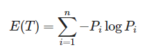
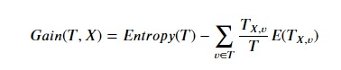

Seleksi Fitur
Seleksi fitur adalah teknik untuk memilih fitur penting dan relevan terhadap data dan mengurangi fitur yang tidak relevan. Seleksi fitur bertujuan untuk memilih fitur terbaik dari suatu kumpulan data fitur. Banyak cara untuk melakukan seleksi fitur. seperti : - Information Gain - Relief - Fast Correlation Based Filter dll
Kali ini Metode yang digunakan adalah Information Gain. Metode Information Gain adalah metode yang menggunakan teknik scoring untuk pembobotan sebuah fitur dengan menggunakan maksimal entropy. Fitur yang dipilih adalah fitur dengan nilai Information Gain yang lebih besar atau sama dengan nilai threshold tertentu.
Contoh Data Keputusan Bermain Tenis
from IPython.display import Image
import pandas as pd
import math
df=pd.read_csv('feature selection.csv')
df
| outlook | temperature | humidity | windy | play | |
|---|---|---|---|---|---|
| 0 | sunny | hot | high | False | no |
| 1 | sunny | hot | high | True | no |
| 2 | overcast | hot | high | False | yes |
| 3 | rainy | mild | high | False | yes |
| 4 | rainy | cool | normal | False | yes |
| 5 | rainy | cool | normal | True | no |
| 6 | overcast | cool | normal | True | yes |
| 7 | sunny | mild | high | False | no |
| 8 | sunny | cool | normal | False | yes |
| 9 | rainy | mild | normal | False | yes |
| 10 | sunny | mild | normal | True | yes |
| 11 | overcast | mild | high | True | yes |
| 12 | overcast | hot | normal | False | yes |
| 13 | rainy | mild | high | True | no |
Mencari Entropy
Untuk menghitung Information gain perlu dihitung dahulu nilai informasi dalam suatu bits dari suatu kumpulan obyek. Cara penghitungan dilakukan dengan menggunakan konsep entropi. Entropi menyatakan impurity suatu kumpulan obyek . Berikut merupakan definisi dari entropi suatu ruang sampel data (T):
Image("Entropy.png")

Keterangan :
T = ruang sampel data yang di gunakaan untuk data pelatihan
n = jumlah partisi
Pi = Probability dari Pi terhadap P
untuk mempermudah penghitungan saya menggunakan fungsi pembantu, seperti fungsi banyak_elemen untuk mengecek ada berapa elemen dalam sebuah kolom atau fiture/class.
# menentukan value atau jenis pada atribut
def banyak_elemen (kolom, data):
kelas=[]
for i in range (len(data)):
if data.values.tolist()[i][kolom] not in kelas:
kelas.append(data.values.tolist()[i][kolom])
return kelas
kelas=banyak_elemen(df.shape[1]-1, df)
outlook=banyak_elemen(df.shape[1]-5,df)
temp=banyak_elemen(df.shape[1]-4,df)
humidity=banyak_elemen(df.shape[1]-3,df)
windy=banyak_elemen(df.shape[1]-2,df)
print(kelas,outlook,temp,humidity,windy)
['no', 'yes'] ['sunny', 'overcast', 'rainy'] ['hot', 'mild', 'cool'] ['high', 'normal'] [False, True]
Fungsi countvKelas untuk menghitung berapa perbandingan setiap elemen yang terdapat di class.
# menentukan count value pada Kelas
def countvKelas(kelas,kolomKelas,data):
hasil=[]
for x in range(len(kelas)):
hasil.append(0)
for i in range (len(data)):
for j in range (len(kelas)):
if data.values.tolist()[i][kolomKelas] == kelas[j]:
hasil[j]+=1
return hasil
pKelas=countvKelas(kelas,df.shape[1]-1,df)
pKelas
[5, 9]
untuk fiture menggunakan fungsi countvJenis, karena menghitung perbandingan elemen-elemen dalam sebuah fiture berdasarkan setiap elemen yang berada di class. Fungsi t_list untuk membantu penghitungan.
# menentukan count value pada jenis tiap atribut
def countvJenis(jenis,kelas,kolomJenis,kolomKelas,data):
hasil=[]
for x in range (len(kelas)):
hasil.append(0)
for i in range (len(data)):
if data.values.tolist()[i][kolomJenis] == jenis:
for j in range (len(kelas)):
if data.values.tolist()[i][kolomKelas] == kelas[j]:
hasil[j]+=1
return hasil
def t_list(atribut,n):
temp=[]
for i in range(len(atribut)):
temp.append(countvJenis(atribut[i],kelas,df.shape[1]-n,df.shape[1]-1,df))
return temp
tOutlook=t_list(outlook,5)
tTemp=t_list(temp,4)
tHum=t_list(humidity,3)
tWin=t_list(windy,2)
print(tOutlook, tTemp, tHum, tWin)
[[3, 2], [0, 4], [2, 3]] [[2, 2], [2, 4], [1, 3]] [[4, 3], [1, 6]] [[2, 6], [3, 3]]
Fungsi entropy untuk Menghitung nilai entropy pada sebuah fiture/class. fungsi e_list untuk mempermudah penghitungan entropy setiap elemen di dalam sebuah fiture.
# menentukan nilai entropy target
def entropy(T):
hasil=0
jumlah=0
for y in T:
jumlah+=y
for z in range (len(T)):
if jumlah!=0:
T[z]=T[z]/jumlah
for i in T:
if i != 0:
hasil-=i*math.log(i,2)
return hasil
def e_list(atribut,n):
temp=[]
tx=t_list(atribut,n)
for i in range (len(atribut)):
ent=entropy(tx[i])
temp.append(ent)
return temp
eOutlook=e_list(outlook,5)
eTemp=e_list(temp,4)
eHum=e_list(humidity,3)
eWin=e_list(windy,2)
print("Sunny, Overcast, Rainy",eOutlook)
print("Hot, Mild, Cold", eTemp)
print("High, Normal", eHum)
print("False, True", eWin)
Sunny, Overcast, Rainy [0.9709505944546686, 0.0, 0.9709505944546686]
Hot, Mild, Cold [1.0, 0.9182958340544896, 0.8112781244591328]
High, Normal [0.9852281360342516, 0.5916727785823275]
False, True [0.8112781244591328, 1.0]
Gain
Gain atau Information Gain adalah salah satu metode untuk seleksi fitur, berdasarkan perankingan fiture-fiture yang memiliki nilai gain tertinggi ke terendah.
Image("Gain.jpeg")

Keterangan :
Entropy (T) = nilai entropy class
Tx,v/T = Probability fiture x
E(Tx,v) = Entropy elemen dalam fiture x
x = fitur
Code untuk menghitung Gain.
def gain(T_list,E_list,pKelas,data):
txv=0
for i in range (len(E_list)):
jumlah=0
for y in range (len(T_list[i])):
jumlah+=T_list[i][y]
txv+=jumlah/(len(data))*(E_list[i])
eUtama=entropy(pKelas)
hasil=eUtama-txv
return hasil
from IPython.display import HTML, display
import tabulate
table=[
["Fiture"]+["Jenis"]+["no"]+["yes"]+["Entropy"]+["Gain"],
["OUTLOOK"]+["Sunny"]+[tOutlook[0][0]]+[tOutlook[0][1]]+[eOutlook[0]]+[gain(tOutlook,eOutlook,pKelas,df)],
[""]+["Overcast"]+[tOutlook[1][0]]+[tOutlook[1][1]]+[eOutlook[1]]+[],
[""]+["Rainy"]+[tOutlook[2][0]]+[tOutlook[2][1]]+[eOutlook[2]]+[],
["TEMPERATURE"]+["Hot"]+[tTemp[0][0]]+[tTemp[0][1]]+[eTemp[0]]+[gain(tTemp,eTemp,pKelas,df)],
[""]+["Mild"]+[tTemp[1][0]]+[tTemp[1][1]]+[eTemp[1]]+[],
[""]+["Cool"]+[tTemp[2][0]]+[tTemp[2][1]]+[eTemp[2]]+[],
["HUMIDITY"]+["High"]+[tHum[0][0]]+[tHum[0][1]]+[eHum[0]]+[gain(tHum,eHum,pKelas,df)],
[""]+["Normal"]+[tHum[1][0]]+[tHum[1][1]]+[eHum[1]]+[],
["WINDY"]+["False"]+[tWin[0][0]]+[tWin[0][1]]+[eWin[0]]+[gain(tWin,eWin,pKelas,df)],
[""]+["True"]+[tWin[1][0]]+[tWin[1][1]]+[eWin[1]]+[],
]
print("Hasil penghitungan Entropy dan Gain setiap Fiture:")
display(HTML(tabulate.tabulate(table, tablefmt='html')))
Hasil penghitungan Entropy dan Gain setiap Fiture:
| Fiture | Jenis | no | yes | Entropy | Gain |
| OUTLOOK | Sunny | 3 | 2 | 0.9709505944546686 | 0.2467498197744391 |
| Overcast | 0 | 4 | 0.0 | ||
| Rainy | 2 | 3 | 0.9709505944546686 | ||
| TEMPERATURE | Hot | 2 | 2 | 1.0 | 0.029222565658954647 |
| Mild | 2 | 4 | 0.9182958340544896 | ||
| Cool | 1 | 3 | 0.8112781244591328 | ||
| HUMIDITY | High | 4 | 3 | 0.9852281360342516 | 0.15183550136234136 |
| Normal | 1 | 6 | 0.5916727785823275 | ||
| WINDY | False | 2 | 6 | 0.8112781244591328 | 0.04812703040826927 |
| True | 3 | 3 | 1.0 |
from IPython.display import HTML, display
import tabulate
table=[
["Fiture"]+["GAIN"],
["OUTLOOK"]+[gain(tOutlook,eOutlook,pKelas,df)],
["TEMPERATURE"]+[gain(tTemp,eTemp,pKelas,df)],
["HUMIDITY"]+[gain(tHum,eHum,pKelas,df)],
["WINDY"]+[gain(tWin,eWin,pKelas,df)],
]
print("Perhatikan Gain pada setiap fiture, urutkan Gain dari yang tertinggi ke rendah untuk meranking fiture:")
display(HTML(tabulate.tabulate(table, tablefmt='html')))
Perhatikan Gain pada setiap fiture, urutkan Gain dari yang tertinggi ke rendah untuk meranking fiture:
| Fiture | GAIN |
| OUTLOOK | 0.2467498197744391 |
| TEMPERATURE | 0.029222565658954647 |
| HUMIDITY | 0.15183550136234136 |
| WINDY | 0.04812703040826927 |
from IPython.display import HTML, display
import tabulate
nul=[
["Fiture"]+["GAIN"]+["RANK"],
["OUTLOOK"]+[gain(tOutlook,eOutlook,pKelas,df)]+["1"],
["TEMPERATURE"]+[gain(tTemp,eTemp,pKelas,df)]+["4"],
["HUMIDITY"]+[gain(tHum,eHum,pKelas,df)]+["2"],
["WINDY"]+[gain(tWin,eWin,pKelas,df)]+["3"],
]
table=[
["Fiture"]+["GAIN"]+["RANK"],
["OUTLOOK"]+[gain(tOutlook,eOutlook,pKelas,df)]+["1"],
["HUMIDITY"]+[gain(tHum,eHum,pKelas,df)]+["2"],
["WINDY"]+[gain(tWin,eWin,pKelas,df)]+["3"],
["TEMPERATURE"]+[gain(tTemp,eTemp,pKelas,df)]+["4"],
]
display(HTML(tabulate.tabulate(nul, tablefmt='html')))
print("Setelah di urut berdasarkan rank :")
display(HTML(tabulate.tabulate(table, tablefmt='html')))
| Fiture | GAIN | RANK |
| OUTLOOK | 0.2467498197744391 | 1 |
| TEMPERATURE | 0.029222565658954647 | 4 |
| HUMIDITY | 0.15183550136234136 | 2 |
| WINDY | 0.04812703040826927 | 3 |
Setelah di urut berdasarkan rank :
| Fiture | GAIN | RANK |
| OUTLOOK | 0.2467498197744391 | 1 |
| HUMIDITY | 0.15183550136234136 | 2 |
| WINDY | 0.04812703040826927 | 3 |
| TEMPERATURE | 0.029222565658954647 | 4 |
Jadi kita bisa mengolah data hanya menggunakan 1/2/3 fitur. semakin sedikit fiture yang digunakan semakin sedikit waktu yg diperlukan untuk mengolah data. Ketepatan jumlah fitur yang akan dipakai. dapat diperiksa keefektifannya terlebih dahulu